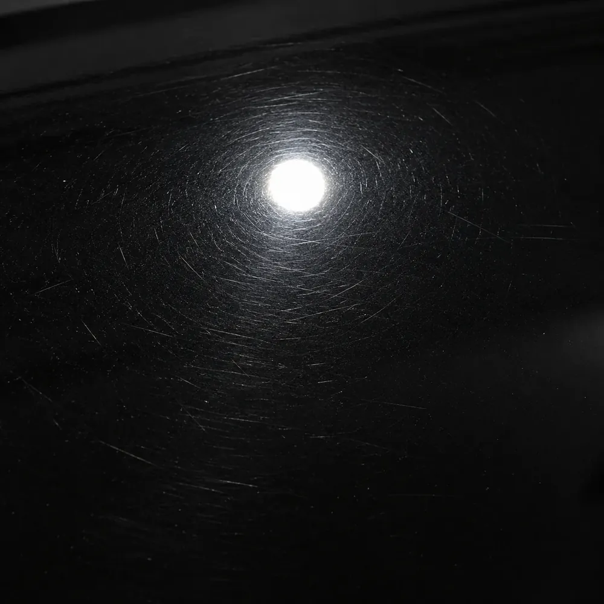

앞유리 돌빵부터
뒤 범퍼 한 귀퉁이까지
예시 이미지
-

-

-

-

-

05 · WHEEL
휠 복원 · 분체도장
휠과 타이어를 분리해 잔기스까지 살핀 뒤 샌딩 · 박리 · 세척을 거쳐 도장해요. 분체도장은 알맞은 온도에서 충분히 구워 마무리해요.
자세히 보기 → -

-

-

-

김프로의 손을 거쳐간
수많은 자동차
26년
차량 내외장 관리
약3,500대
누적 시공
1,020대
부분도색
750대
광택
작업 순서
- 01
전화 상담 · 예약
010-6411-4123으로 차종과 상태를 알려 주시면 방문 날짜를 잡아요.
- 02
상태 살피기
흠집 깊이, 도장이 벗겨진 범위, 휠의 기스와 파임을 가까이서 먼저 봐요.
- 03
방법 정하기
부분도색으로 될지, 휠은 컷팅과 분체도장 중 무엇이 맞을지 상의해서 정해요.
- 04
시공
분리 · 샌딩 · 세척 같은 밑작업부터 차례대로. 굽고 말리는 시간은 줄이지 않아요.
- 05
확인 · 출고
빛 아래에서 다시 살핀 뒤 돌려드려요.

예시 이미지
예시 이미지
휠 컷팅기
장비 설치 문의
- 레이저로 휠 면을 읽는 방식이라 소음이 적어요
- 한글 화면이라 처음 쓰는 분도 익히기 쉬워요
- 회전판 구성이라 따로 바꿔 끼우는 작업이 줄어요
- 설치와 사용법 안내까지 함께 해요

예시 이미지
오시는 길
- 주소
- 광주광역시 북구 서암대로 113
- 방문
- 예약 뒤 방문해 주세요